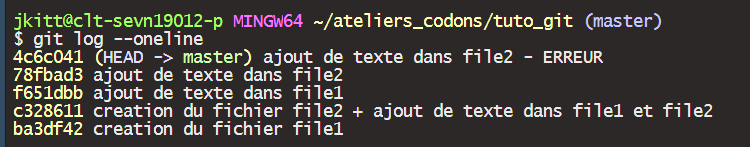

Les ateliers codons
Des créneaux réguliers pour découvrir et progresser
Deux parcours : initiation et perfectionnement
Une équipe d’animation
Des supports disponibles en ligne : ateliers-codons.netlify.app/
Sources pour cet atelier :
Gestionnaire de version
Gestionnaire de version
Un gestionnaire de version est un système qui enregistre l’évolution d’un fichier ou d’un ensemble de fichiers au cours du temps de manière à ce qu’on puisse rappeler une version antérieure d’un fichier à tout moment.
Pro Git
Gestionnaire de version
Sans gestion de version …
Système de gestion de version
Un système de gestion de version (VCS) permet de :
ramener un fichier à un état précédent
ramener le projet complet à un état précédent
visualiser les changements au cours du temps
voir qui a modifié quelquechose qui pourrait poser un problème
voir qui a introduit un problème et quand
…
VCS centralisé vs. VCS distribué
Pourquoi utiliser Git ?
Gratuit
Open Source
Très rapide
Evolutif
Création et fusion de branches
Installer Git
Vérifier si Git est déjà installé
Ouvrez un terminal :
macOS :
Cmd+Espaceet tapezterminalWindows : dans la barre de recherche, tapez
cmd
Vous pouvez également ouvrir un terminal directement dans RStudio :
Tools>Teminal>New TerminalAlt+Maj+RCliquez sur l’onglet Teminal
Vérifier si Git est déjà installé
Si Git est installé, vous pouvez utiliser Git Bash :
Vérifier si Git est déjà installé
Dans le terminal, tapez les commandes suivantes :
- Afficher l’emplacement de Git sur votre ordinateur :
which git
- Afficher la version de Git installée sur votre ordinateur :
git --version
git -v
Installer Git
Configurer Git
Configurer Git
Il est possible de configurer Git pour optimiser son utilisation.
Pour le moment, nous allons renseigner les informations suivantes :
nom d’utilisateur
e-mail d’utilisateur
éditeur de texte par défaut
La configuration de Git s’effectue dans un fichier caché nommé .gitconfig, placé à la racine de votre répertoire d’utilisateur (votre “home”).
Configurer Git
La configuration de Git peut se faire à trois niveaux :
System : tous les utilisateurs
Global : tous les répertoires de l’utilisateur
Local : répertoire courant
Configurer Git
Configurer Git - nom et e-mail
Tapez les commandes suivantes dans le terminal :
git config --global user.name "Prenom Nom"
git config --global user.email prenom.nom@mail.com
Configurer Git - éditeur de texte par défaut
Pour configurer l’éditeur de texte par défaut, copiez le chemin d’accès vers l’éditeur de votre choix (par ex. Notepad ++)
Tapez ensuite la commande suivante (attention aux guillemets) :
git config --global core.editor '"C:\Program Files\Notepad++\notepad++.exe"'
Configurer Git
Vous pouvez ouvrir le fichier de configuration de Git (.gitconfig) :
Dans le terminal
git config --global --listDans l’éditeur de texte
git config --global -e
Configurer Git
Obtenir de l’aide
Obtenir de l’aide
Dans un moteur de recherche, tapez
git config docDans le terminal, tapez
git config --helpPour une version synthétique de l’aide, utilisez
git config -h
Initialiser un dépôt Git
Initialiser un dépôt Git
Naviguez jusqu’à l’emplacement sur votre ordinateur où vous souhaitez créer un nouveau répertoire
Utilisez la commande
cd(change directory) pour naviguerLe répertoire actuel est noté “point”
.Pour revenir d’un niveau en arrière, utilisez
cd ..
Créez un nouveau répertoire :
mkdir tuto_gitmkdir: make directory
Placez-vous dans ce nouveau répertoire :
cd tuto_gitInitialisez un dépôt Git dans ce répertoire :
git init
Initialiser un dépôt Git
Dans le répertoire tuto_git, un répertoire caché .git a été créé.
Initialiser un dépôt Git
Pour afficher le contenu d’un répertoire, utilisez la commande ls (list) :
cette commande n’affiche pas les fichiers ou dossiers cachés
utilisez
ls -a(all) pour afficher tout le contenu du répertoireutilisez
ls -la(list all) pour afficher tout le contenu sous forme de liste
Vous pouvez ouvrir ce répertoire .git à l’aide de la commande open .git.
Initialiser un dépôt Git
Le répertoire caché .git contient toutes les informations nécessaires à Git pour suivre l’historique de votre dépôt.
Si vous changez d’avis et souhaitez supprimer ce répertoire .git, utilisez la commande suivante :
Créer un fichier
Créer un fichier
La commande echo permet d’afficher du texte.
Pour créer un fichier et ajouter du contenu, combinez la commande echo avec l’opérateur >.
Créer un fichier
La commande cat permet d’afficher le contenu d’un fichier.
Les commandes head et tail permettent d’afficher les premières lignes ou les dernières lignes d’un fichier.
Le workflow Git
Les trois zones
Afficher l’état du répertoire
La commande git status permet d’afficher l’état actuel du répertoire de travail :
<br>
Afficher l’état du répertoire
Ajouter des fichiers à la zone d’index
La commande git add permet d’ajouter des fichiers à la zone d’index :
en nommant les fichiers un par un :
git add file1.txten utilisant un motif
git add *.txten ajoutant tous les fichiers du répertoire de travail
git add .
Ajouter des fichiers à la zone d’index
git add file1.txt
Ajouter des fichiers à la zone d’index
git add file1.txt
Configurer Git - fin de ligne
Configurer Git - fin de ligne
| Windows | git config --global auto.crlf true |
| macOS / Linux | git config --global auto.crlf input |
Modifier un fichier
L’opérateur >> permet d’ajouter une ligne dans un fichier existant :
echo world >> file1.txt
Modifier un fichier
Modifier un fichier
La commande git diff permet de comparer le répertoire de travail à la zone d’index :
git diff
Modifier un fichier
git add file1.txt
Modifier un fichier
Sauvegarder un instantané de la zone d’index
Pour créer un instantané de la zone d’index, utilisez la commande suivante :
Si vous avez besoin de taper un message plus long, la commande git commit ouvrira votre éditeur de texte.
Sauvegarder un instantané de la zone d’index
git commit -m "creation du fichier file1.txt"
Sauvegarder un instantané de la zone d’index
Sauvegarder un instantané de la zone d’index
Sauvegarder un instantané de la zone d’index
100644 : fichier “normal”
100755 : fichier exécutable
120000 : lien symbolique
Sauvegarder un instantané de la zone d’index
git commit -m "creation du fichier file1.txt"

Les commits - quand ?
Un commit n’est pas un Ctrl + S !
Un commit contient des modifications significatives que l’on souhaite sauvegarder
Trouver le juste milieu entre un commit “trop petit” et un commit “trop grand”
Les commits - quoi ?
Ne pas mettre dans un même commit des mofications qui n’ont rien à voir les unes avec les autres.
Un des principaux intérêts de Git est de pouvoir revenir à un état antérieur d’un fichier.
Si les modifications concernent différentes parties de votre projet, utilisez des commits différents (intérêt de la zone d’index)
Les commits - comment ?
Le message associé à un commit doit décrire ce qui a été fait et pourquoi.
Etre le plus explicite possible
Choisir une convention et s’y tenir

XKCD
Commit “direct”
Il est possible (mais pas toujours souhaitable) de faire un commit sans passer par l’étape d’ajout dans la zone d’index.
Cette commande fonctionne pour les fichiers qui sont déjà suivis par Git (les fichiers qui existent dans la zone d’index).
Commit “direct”
echo test >> file1.txt
Commit “direct”
git commit -am "ajout d'une ligne dans file1.txt"
Supprimer un fichier
La commande touch permet de créer un fichier vide :
touch file2.txt
Supprimer un fichier
git add .
Supprimer un fichier
La commande git diff --staged (ou git diff --cached) permet de comparer la zone d’index au dernier commit :
Supprimer un fichier
git commit -m "ajout du fichier vide file2.txt"
Supprimer un fichier
La commande rm permet de supprimer un fichier du répertoire de travail.
rm file2.txt
La commande ls permet de faire la liste des fichiers présents dans le répertoire.
Pour lister les fichiers présents dans la zone d’index, utilisez git ls-files.
Le fichier est supprimé du répertoire de travail mais pas de la zone d’index.
Supprimer un fichier
rm file2.txt
Supprimer un fichier

Supprimer un fichier
Pour retirer de la zone d’index un fichier supprimé du répertoire de travail, il faut procéder de la même façon que pour un commit “classique” :
git add file2.txt
Cette commande ajoute la suppression du fichier à la zone d’index.
Supprimer un fichier
git commit -m "suppression du fichier file2.txt"
Supprimer un fichier
Il est possible de supprimer un fichier à la fois du répertoire de travail et de la zone d’index, à l’aide de la commande git rm.
touch file3.txt
Supprimer un fichier
git add file3.txt
Supprimer un fichier
git commit -m "creation du fichier vide file3.txt"
Supprimer un fichier
git rm file3.txt
Supprimer un fichier
Supprimer un fichier
git commit -m "suppression du fichier file3.txt"
Déplacer ou renommer un fichier
La commande mv (move) permet de déplacer le contenu d’un fichier dans un autre (revient à renommer un fichier) :
mv file1.txt file0.txt
Déplacer ou renommer un fichier
git add file1.txt
Déplacer ou renommer un fichier
git add file0.txt
Déplacer ou renommer un fichier
git commit -m "fichier file1.txt renomme file0.txt"
Déplacer ou renommer un fichier
Comme nous l’avons vu pour les commandes rm et git rm, la commande git mv permet d’appliquer la commande mv au répertoire de travail et à la zone d’index.
git mv file0.txt file1.txt
Déplacer ou renommer un fichier
git commit -m "fichier file0.txt renomme file1.txt"
Ignorer des fichiers
Retirer un fichier de la zone d’index
Imaginons que nous avons ajouté un fichier de logs à la zone d’index par erreur (peut arriver en utilisant git add . ou git add -A) :
touch logs

Retirer un fichier de la zone d’index
Imaginons que nous avons ajouté un fichier de logs à la zone d’index par erreur (peut arriver en utilisant git add . ou git add -A) :
git add .
Retirer un fichier de la zone d’index
Retirer un fichier de la zone d’index
git restore --staged logs
Retirer un fichier de la zone d’index
Ignorer des fichiers
Pour qu’un fichier du répertoire de travail ne soit pas tracé par Git, il faut l’ajouter dans un fichier nommé .gitignore placé à la racine du répertoire :
echo logs > .gitignore
Ignorer des fichiers
git add .gitignore
Ignorer des fichiers
git commit -m "creation du fichier logs et ajout de ce fichier dans .gitignore"
Ignorer des fichiers
Ignorer des fichiers
Le site GitHub propose des templates de fichiers .gitignore pour différents langages de programmation : https://github.com/github/gitignore
Aperçu du fichier .gitignore proposé pour R :
Ignorer des fichiers
Le fichier .gitignore permet d’ignorer uniquement les fichiers qui ne sont pas tracés par git.
touch bin

Ignorer des fichiers
git add .
Ignorer des fichiers
git commit -m "creation du fichier bin"

Ignorer des fichiers
echo bin >> .gitignore
Ignorer des fichiers
git add .
Ignorer des fichiers
git commit -m "ajout du fichier bin dans .gitignore"
Ignorer des fichiers
echo test > bin
Ignorer des fichiers
Le fichier bin est toujours tracé !
Ignorer des fichiers
La commande git rm --cached permet de supprimer un fichier tracé de la zone d’index :
git rm --cached bin
Ignorer des fichiers
git commit -m "suppression du fichier bin du depot"
Ignorer des fichiers
Les branches
Les branches
Une branche permet de diverger de la ligne principale de notre dépôt et de travailler sans impacter cette ligne principale.
Créer une branche
Commençons par nettoyer notre répertoire :
rm file1 file2
rm -rf .git
Initialisons un nouveau dépôt :
git init
Créer une branche
Ajoutons un fichier vide :
touch file1
git add .
git commit -m "creation du fichier vide file1"
Modifions ce fichier :
echo hello > file1
git commit -am "ajout de hello dans file1"
Créer une branche
Créer une branche
La commande git branch <name> permet de créer une nouvelle branche.
Par défaut, la nouvelle branche diverge de la branche principale au niveau du commit le plus récent (HEAD).
Créer une branche
Créer une branche
La commande git branch <name> <commit-id> permet de créer une nouvelle branche à partir d’un commit précis.
Créer une branche
Changer de branche
La commande git branch affiche la liste des branches existantes.
Pour vous placer sur une autre branche, utilisez une des commandes suivantes :
git switch <name>git checkout <name>
Renommer une branche
Pour renommer la branche actuelle, utilisez la commande suivante :
git branch -m <new-name>
Pour renommer une autre branche, précisez le nom de la branche concernée :
git branch <old-name> <new-name>
Travailler sur une branche
Plaçons-nous sur la branche feat et modifions le fichier :
git switch feat
echo world >> file1
git add .
git commit -m "ajout de world dans file1"
Travailler sur une branche
Comparer deux branches
Pour comparer deux branches, utilisez la commande suivante (utilisable avec l’option --oneline) :
git log <branch 1>..<branch 2>
Fusionner les branches
Pour “rappatrier” sur la branche principale les modifications apportées sur une autre branche, procédez de la manière suivante :
placez-vous sur la branche dans laquelle vous voulez inclure les modifications (à l’aide de
git switch)utilisez la commande
git merge <name>pour inclure les modifications
Fusionner les branches
Supprimer une branche
Pour supprimer une branche, utilisez la commande suivante :
git branch -d <name>
Naviguer dans l’historique
Nettoyer le répertoire de travail
Supprimons le contenu de notre répertoire de travail :
rm -rf .git
rm .gitignore bin logs file1.txt
Initialisons un nouveau dépôt Git :
git init
Création d’un fichier
touch file1
git add .
git commit -m "creation du fichier file1"
Modifications
touch file2
git add .
Modifications
echo hello > file1
echo hello > file2
Afficher l’état du répertoire
Afficher l’état du répertoire
La commande git status -s (short) permet d’afficher un aperçu condensé de l’état du répertoire :
Les deux colonnes à gauche du nom du fichier se lisent de la manière suivante :
zone d’index à gauche
répertoire de travail à droite
Afficher l’état du répertoire
git add .
git status -s

Commit
git commit -m "creation du fichier file2 + ajout de texte dans file1 et file2"
Une dernière modification
Ajoutons du texte dans le fichier file1 :
echo world >> file1
git add .
git commit -m "ajout de texte dans file1"
L’historique des commits
La commande git log permet d’afficher l’historique des commits :
git log
L’historique des commits
L’historique des commits
L’historique des commits
Par défaut, le dernier commit est affiché en premier.
Pour inverser l’ordre des commits, utilisez l’option --reverse :
git log --reverse
L’historique des commits
Pour un affichage condensé de l’historique, utilisez l’option --oneline :
git log --oneline
L’historique des commits
Pour un affichage détaillé, utilisez l’option -p:
git log -p
L’historique des commits
Naviguer dans l’historique
La commande git show permet d’afficher le détail d’un commit :
git show <commit-id>git show HEAD~<n>où n indique le nombre de commits à partir du dernier
Naviguer dans l’historique
Naviguer dans l’historique
La commande suivante permet d’afficher pour un commit le contenu d’un fichier :
git show <commit-id>:<file>git show HEAD~<n>:<file>
Naviguer dans l’historique
Corriger les erreurs
git restore
Imaginons que du texte a été ajouté à un fichier, et que nous souhaitons annuler cette modification :
echo test >> file2
git restore file2
git restore
git restore
Le fichier file2 a été supprimé par erreur.
La commande git restore permet de restaurer le fichier supprimé.
rm file2
git restore file2
git restore
git restore
Pour ignorer l’ensemble des modifications depuis le dernier commits, utilisez la commande git restore . :
echo erreur >> file1
rm file2
git restore .
git restore
git commit --amend
Imaginons que le message associé à notre dernier commit contient des erreurs :
echo world >> file2
git add file2
git commit -m "ajou d txte dns fl2"
git commit --amend
La commande git commit --amend -m permet de corriger le message :
git commit --amend -m "ajout de texte dans file2"
git commit --amend
Imaginons que nous avons oublié d’ajouter un fichier à la zone d’index avant de faire un commit :
touch file3 file4
git add file3
git commit -m "creation des fichiers vides file3 et file4"
git commit --amend
Ajoutons le fichier oublié dans la zone d’index :
git add file4
La commande suivante permet de corriger le dernier commit sans modifier le message associé :
git commit -- amend --no-edit
git commit --amend
git revert
Dans un éditeur de texte, inversons les deux lignes dans file2 (“hello world” devient “world hello”).
Ajoutons la modification à l’index et créons un commit :
git add file2
git commit -m "inversion de deux lignes dans file2"
git revert
La commande git revert <commit-id> permet de créer un nouveau commit contenant la modification inverse :
git reset
La commande git reset permet de revenir à un commit précédent :
Avant le “reset”
Après le “reset”
git reset
Pour revenir à un commit antérieur, utilisez git reset --hard <commit -id> :
git reset
L’option --hard utilisée avec git reset supprime les modifications locales associées aux commits “supprimés”.
Pour revenir à un commit précédent tout en conservant les modifications locales associées aux commits supprimés, vous pouvez utiliser l’option --mixed :
touch file3 file4
git add .
git commit -m "creation des fichiers vides file3 et file4"
git reset

git restore --source
Imaginons qu’un fichier contienne une erreur, et nous souhaitons rétablir un état antérieur pour ce fichier seulement :
echo erreur >> file2
git add file2
git commit -m "ajout de texte dans file2 - ERREUR"
git restore --source
Pour rétablir l’état antérieur d’un seul fichier, utilisez la commande git restore avec l’option --source <commit-id> :

git restore --source
git reflog
Imaginons que nous supprimons par erreur le dernier commit :
touch file3 file4
git add .
git commit -m "creation de deux fichiers vides file3 et file4"
git reflog
git reflog
La commande git reflog affiche l’intégralité des commandes, y compris les suppressions de commits.
git reflog
La commande git reset --hard permet de restaurer le dernier commit :
git reset --hard <commit-id>
Comment utiliser Git ?
En ligne de commande
A l’aide d’un Environnement de Développement Intégré (IDE)
RStudio
VS Code
A l’aide d’une Interface Utilisateur Graphique (GUI)
Git Kraken
Source Tree